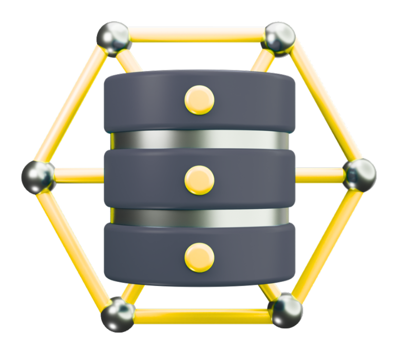
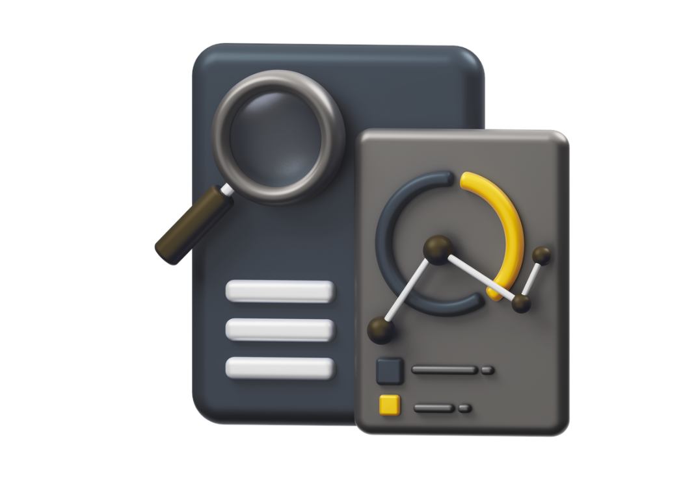
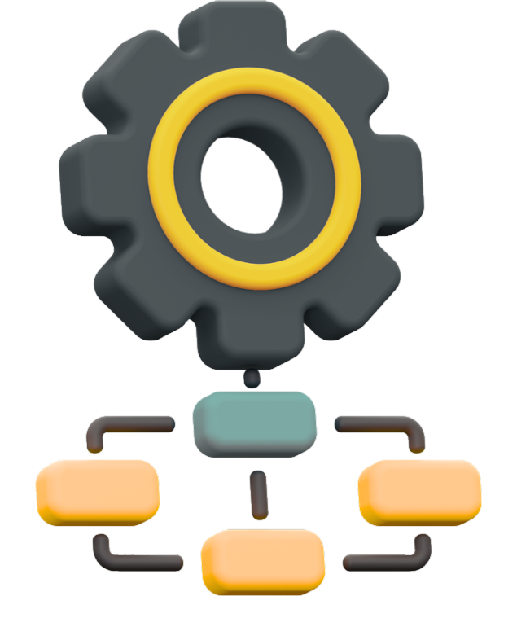

Was sind KI-Agenten?
KI-Agenten erfassen Informationen, bewerten sie anhand festgelegter Regeln und leiten passende Bearbeitungsschritte ein. Dabei können sie Dokumente, Datenbanken und angebundene Geschäftsanwendungen einbeziehen.
Digitale Unterstützung für wiederkehrende Aufgaben und informationsbasierte Abläufe.
KI-Agenten greifen auf freigegebene Daten und Systeme zu, prüfen Informationen und führen klar definierte Arbeitsschritte aus.
KI-Agenten erfassen Informationen, bewerten sie anhand festgelegter Regeln und leiten passende Bearbeitungsschritte ein. Dabei können sie Dokumente, Datenbanken und angebundene Geschäftsanwendungen einbeziehen.
Vor der Umsetzung wird festgelegt, welche Aufgaben der Agent übernehmen darf und wann menschliche Kontrolle erforderlich bleibt. Datenzugriffe, Berechtigungen, Systemaktionen und Übergaben werden eindeutig begrenzt.
Wiederkehrende Aufgaben binden Zeit und verursachen unnötige Übergaben.
Viele Prozesse bestehen aus Informationssuche, Datenprüfung, wiederholten Eingaben und Rückfragen zwischen mehreren Zuständigkeiten. Informationen liegen in unterschiedlichen Dokumenten oder Systemen, Bearbeitungsschritte werden uneinheitlich ausgeführt und Vorgänge verzögern sich durch manuelle Übergaben. KI-Agenten können diese Aufgaben innerhalb klar definierter Grenzen vorbereiten oder übernehmen.
Von der Aufgabenanalyse bis zum einsatzfähigen Agenten.
Die Lösung wird auf den konkreten Prozess, die vorhandenen Systeme und die benötigten Kontrollmechanismen abgestimmt. Aufgabe, Datenzugriff, Handlungsspielraum und menschliche Übergaben werden vor der technischen Umsetzung eindeutig festgelegt.
Acht Schritte von der Anfrage bis zur dokumentierten Bearbeitung.
Die tatsächliche Zusammensetzung richtet sich nach Aufgabe, Systemlandschaft und gewünschtem Automatisierungsgrad.








KI-Agenten unterstützen unterschiedliche informationsbasierte Unternehmensprozesse.
Geeignet sind wiederkehrende Abläufe mit klaren Regeln, verfügbaren Daten und eindeutig geregelten Übergaben. Entscheidend ist, ob eine Aufgabe ausreichend strukturiert ist und der zulässige Handlungsspielraum klar begrenzt werden kann.
Aus manuellen Routinen entsteht ein geregelter Assistenzprozess.
Der Agent verbindet Datenquellen, Bearbeitungsregeln und definierte Aktionen zu einem nachvollziehbaren Ablauf. Informationen werden gebündelt, Bearbeitungsschritte vorbereitet und unklare Fälle kontrolliert übergeben.
Entlastung dort, wo Informationen und Routinen zuverlässig verarbeitet werden.
KI-Agenten unterstützen Mitarbeitende bei wiederkehrenden Aufgaben, ohne Zuständigkeiten oder Kontrollen aufzuheben. Bearbeitungswege werden verkürzt, Abläufe einheitlicher ausgeführt und relevante Informationen schneller bereitgestellt.
Ermitteln Sie, welche Aufgaben ein KI-Agent sinnvoll übernehmen kann.
Die Potenzialanalyse zeigt, welche Prozesse geeignet sind, welche Daten und Systeme benötigt werden und welche Kontrollmechanismen für die Umsetzung erforderlich sind.
Die wichtigsten Informationen zu Einsatz, Kontrolle und Integration.
Der Funktionsumfang wird auf den jeweiligen Prozess, die verfügbaren Daten und die zulässigen Aktionen begrenzt.
Nein. Er übernimmt klar definierte Aufgaben und unterstützt bestehende Abläufe.
Ja. Voraussetzung sind geeignete Schnittstellen, Zugriffsrechte und Berechtigungen.
Nur innerhalb vorher festgelegter Regeln, Kontrollpunkte und Freigaben.
Der Vorgang wird mit dem vorhandenen Kontext an eine zuständige Person übergeben.
Ja. Dokumente, Datenbanken und Geschäftsanwendungen können gemeinsam genutzt werden.
Ja. Relevante Bearbeitungsschritte und ausgeführte Aktionen können nachvollziehbar erfasst werden.
Wiederkehrende, informationsbasierte und ausreichend klar strukturierte Tätigkeiten.
Ja. Weitere Aufgaben, Datenquellen, Regeln und Systeme können ergänzt werden.